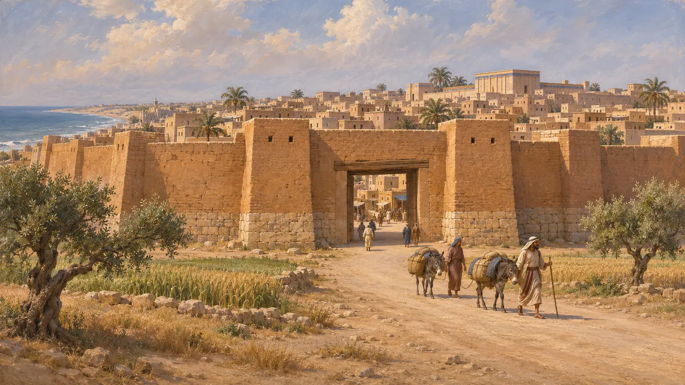
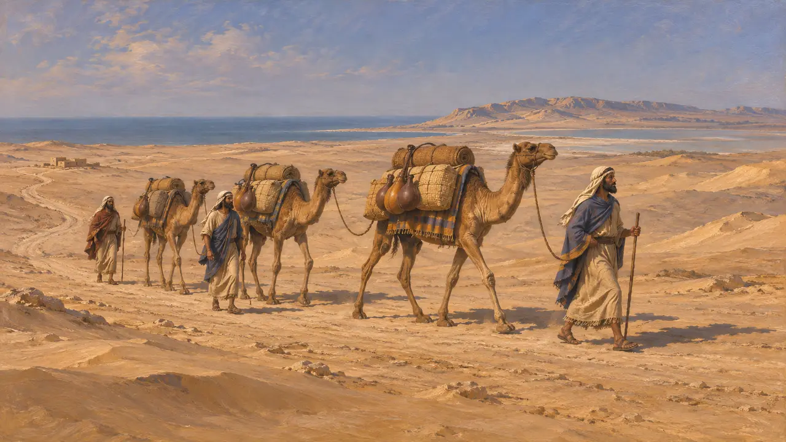
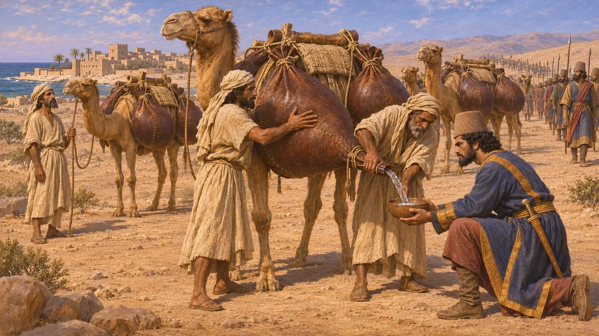
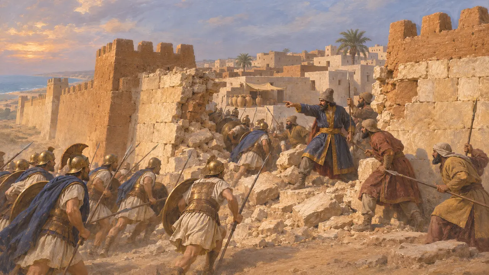

Gaza
Ciudad al comienzo del camino del desierto hacia Egipto, la Caditis de Heródoto, 525 a. C.
En el juego: Nivel 2: El Portalanza
Gaza, a la que Heródoto parece llamar Caditis, era una gran ciudad del sur de Palestina en el camino costero a Egipto. Más allá, el camino cruzaba las estaciones costeras en manos de los árabes y tres días de desierto sin agua hasta Pelusio. El ejército de Cambises fue por allí en 525.
En el juego: Gaza se nombra en la leva, el informe de campaña y las conversaciones del nivel de Menfis, como el comienzo del camino del desierto que cruzó el ejército del Rey.

Caditis
Relato antiguoHeródoto dice que la única entrada conocida a Egipto iba de Fenicia a los confines de Caditis, una ciudad de los sirios de Palestina no mucho menor que Sardes. El faraón Necao, dice, tomó Caditis tras vencer a los sirios. La mayoría de los historiadores identifican Caditis con Gaza.
Herodotus 2.159, 3.5

El camino del desierto
Relato antiguoDesde Caditis, los puestos comerciales de la costa hasta Ieniso pertenecían al rey de los árabes, y de Ieniso al monte Casio y al lago Serbonis la tierra volvía a ser siria. Luego venía Egipto. Heródoto dice que el tramo desde Ieniso era de tres días de desierto sin agua.
Herodotus 3.5

Agua para el ejército
Relato antiguoCambises pactó con el rey de los árabes, que llenó odres de piel de camello con agua, los cargó en sus camellos y esperó en el desierto. Heródoto cuenta también una historia de una conducción de cueros desde un río, que considera menos probable.
Herodotus 3.7-9

Asedios posteriores
Relato antiguoGaza resistió a Alejandro dos meses en 332 bajo un comandante persa, Batis, y fue tomada al asalto. Arriano narra el asedio. Las excavaciones en Tell el-Ajjul y otros lugares cercanos a la ciudad moderna muestran su larga historia como ciudad de comercio.
Arrian, Anabasis 2.26-27
Fuentes
- Herodotus 2.159, 3.5-9
- Arrian, Anabasis 2.26-27